Space Hunter — Horizon Editor
User Manual
Build and edit N.I.N.A. custom‑horizon (.hrz) files in two synced views, and —
optionally — slew any ASCOM mount to horizon points to confirm the sky is actually clear.
1 · The interface at a glance
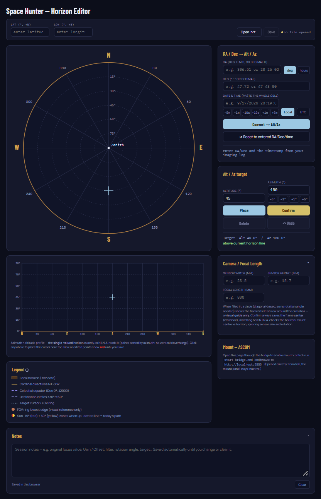
1 2 3 4 5 6 7 8 9 10- 1Latitude / Longitude
- 2Open
.hrz/ Save - 3Image coordinates (RA/Dec → Alt/Az)
- 4Alt/Az target
- 5Camera / focal length
- 6Mount controls (ASCOM)
- 7Sky Dome view
- 8Strip view
- 9Legend
- 10Notes
Before you start
Editing only (no mount)
Double‑click horizon_editor_local.html. It opens in Chrome or Edge with full function
except mount control.
With a mount connected
- Open your mount software (GS Server, EQMOD, ASIMount, iOptron Commander, …) and connect the mount.
- Double‑click
start-bridge.cmd. The ASCOM Chooser opens — pick your mount driver and confirm. - A terminal window opens and shows
http://localhost:5555/. Keep this window open — closing it ends mount control. - Open
http://localhost:5555in Chrome/Edge. (Ctrl+click the link works in Windows Terminal; in a classiccmdwindow, type the address into the browser.)


http://localhost:5555 and leave this window open.Your rig must be polar aligned (permanent pier, or PA carried over from the night before).
Handling outside the app
In mount‑connected mode: additionally open your imaging software and connect your camera; if you use a flat panel, connect that too. If you want to confirm an external guide scope (if used) has a clear view at the selected point, that gear and its software must be connected as well. Equipment other than the mount is not handled in this application.
LICENSE). When the Sun is up, both views
show it with a red 15° and yellow 30° safety ring and today's trajectory.
First‑time setup
1Enter your Latitude / Longitude and 2open your
.hrz file. 5Add your camera sensor width/height and the scope's
focal length. These values are remembered until you change them. When a mount is connected the app
adopts the mount's site automatically. Your horizon then appears in the Sky Dome 7
and Strip 8 views. When you later edit the horizon, the Save button
2 writes your changes back to the .hrz file.
http://localhost:5555). They are erased if you clear the browser cache / "cookies and site
data," use a setting that clears data when the browser closes, or open in a Guest / InPrivate window — so
don't clear site data if you want to keep them. The .hrz file itself must be re‑opened each
session (browsers won't silently re‑open a file): the horizon is redrawn from memory, but re‑Open it
before you Save.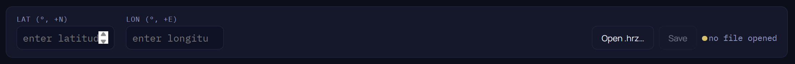

The two views
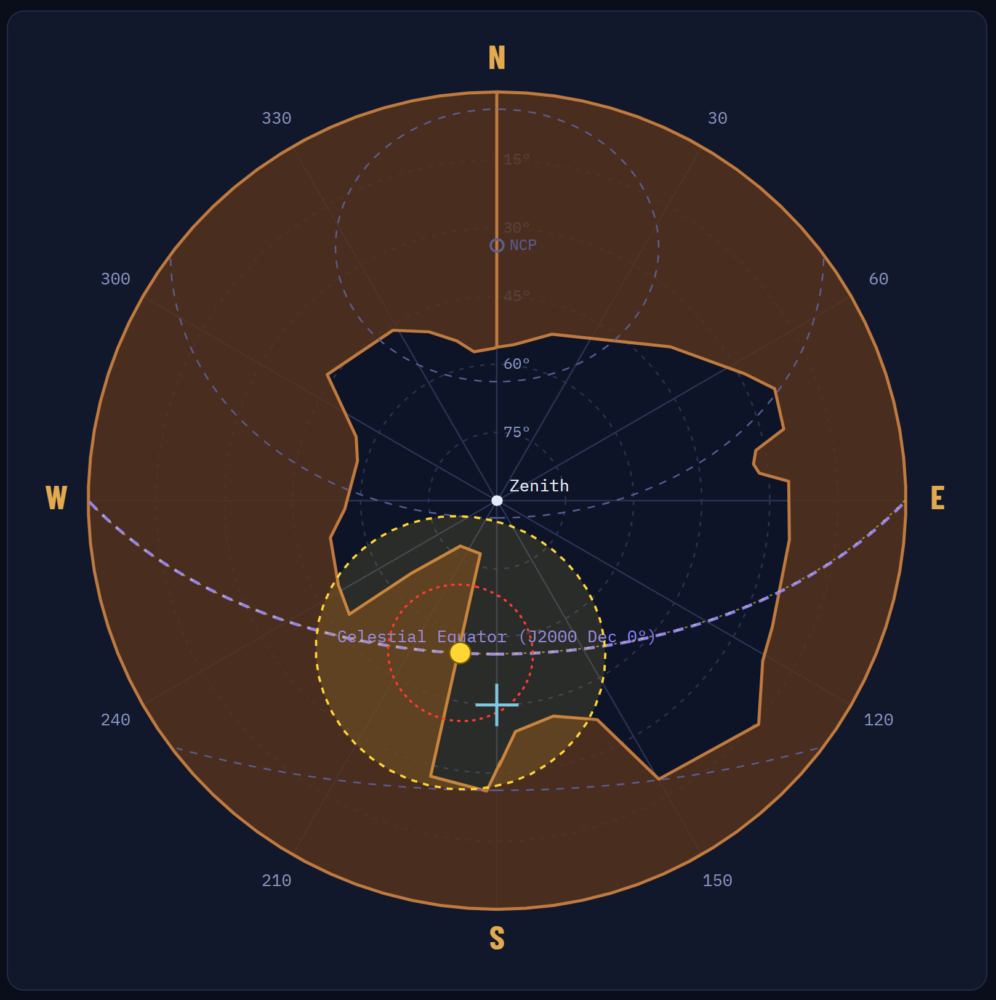
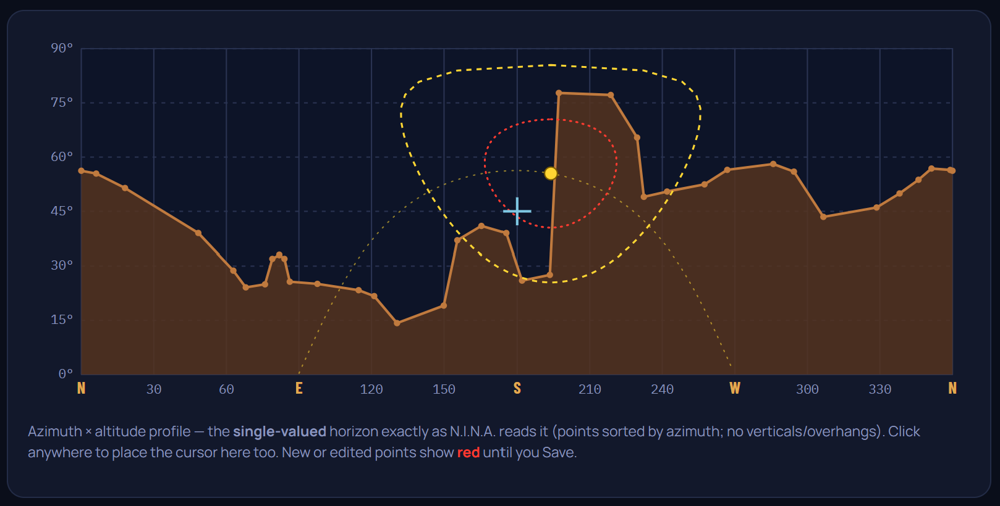
Both views zoom with the mouse wheel (centred on the pointer) and show the crosshair, FOV ring, and — in daytime — the Sun and its safety rings.
Two ways to work
A · Offline, from an imaging log
A target recently clipped a new obstruction (growth, a building). Using N.I.N.A.'s Session Metadata
export, find the last good image and copy its date/time + RA/Dec into the Image‑coordinates box
3, then Convert → Alt/Az. The crosshair jumps to where that frame was taken;
adjust the horizon there. Step along the target's path with the time −/+ buttons (RA / hour‑angle
axis). No mount needed.

−/+ traces the RA axis.
Reset to entered RA/Dec/time restores your last entry.B · Connected, by slewing
On a cloudy day or at dawn after imaging, brighten your camera and refocus for daylight. Select a point,
Slew to point, take an image, and check whether you're clear of the obstruction. Nudge with the Az
±° buttons 4 or the time −/+ buttons 3,
re‑slew, and repeat. Once clear, back off by the last step and save the point. Move to the next.
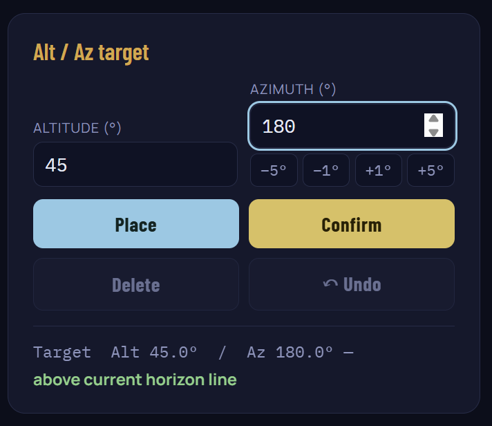
±° nudges, Place, Confirm, Delete, Undo.Editing the horizon
- Select — click an existing point on the Strip line; it highlights and its values load into box 4.
- Delete — with a point selected, Delete removes it. (The button is inactive until a point is selected.)
- Place — click empty space to drop the crosshair where you want a point.
- Confirm — writes the point into the horizon. New/edited points show red.
- Save — box 2 writes the file. Until you Save, red points are unsaved and will be lost. Undo reverses the last add/overwrite/delete.
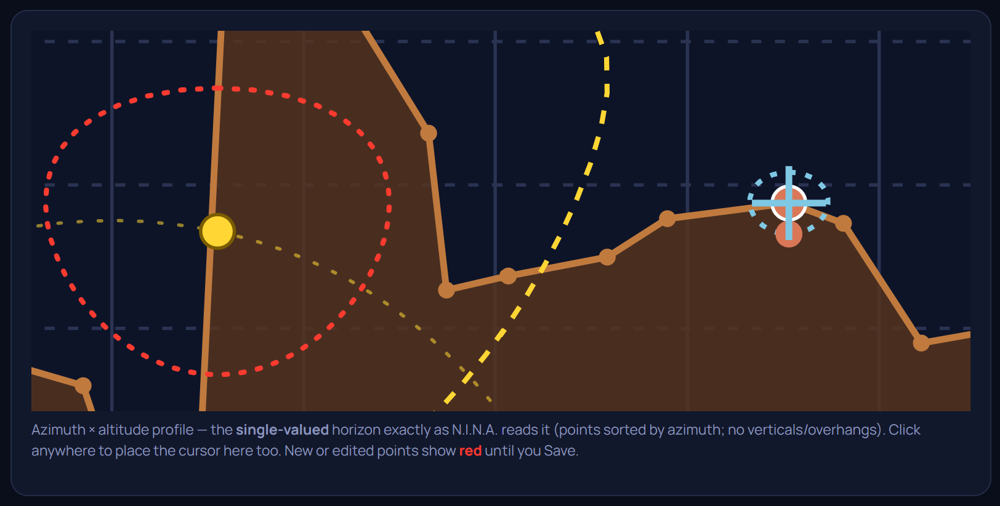
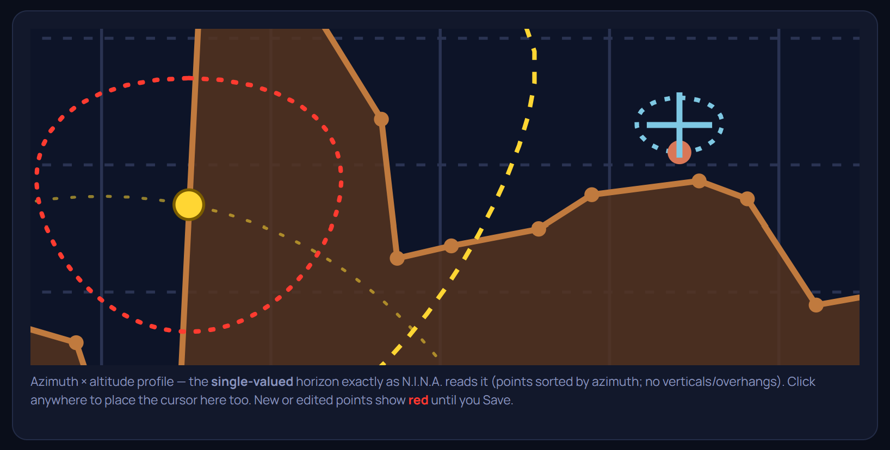
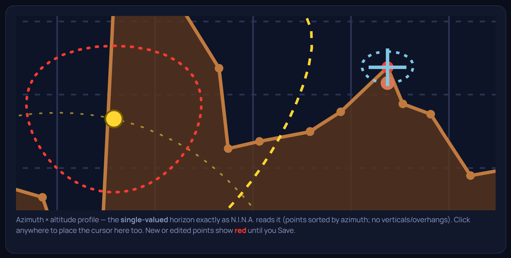
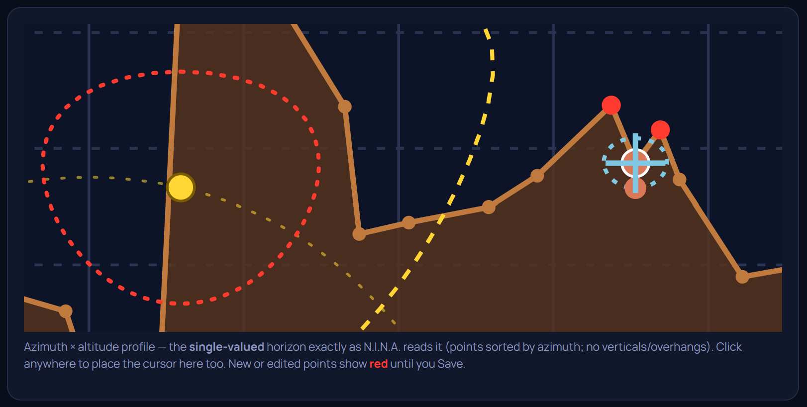
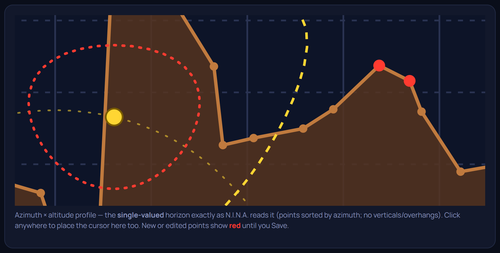
6 · Mount controls (ASCOM)
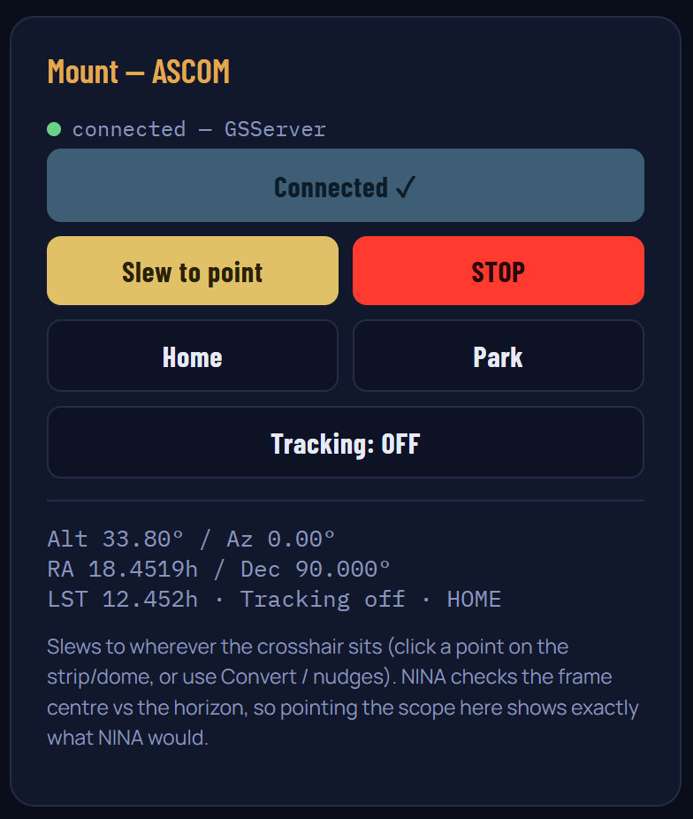
| Control | Does |
|---|---|
| Slew to point | Slews to the crosshair's Alt/Az. Low‑altitude and near‑Sun targets confirm first. |
| STOP | Aborts any slew immediately. |
| Home | Sends the mount to its home position. Greyed out if the driver has no Find Home (e.g. EQMOD). |
| Park | Parks and latches the mount. A later Slew or Home auto‑unparks. Greyed out if unsupported. |
| Tracking | On/off (see the note below). |
N.I.N.A. checks the frame centre against the horizon (it ignores sensor size and rotation), so pointing the scope at a horizon point shows exactly what N.I.N.A. would.
10 · Notes
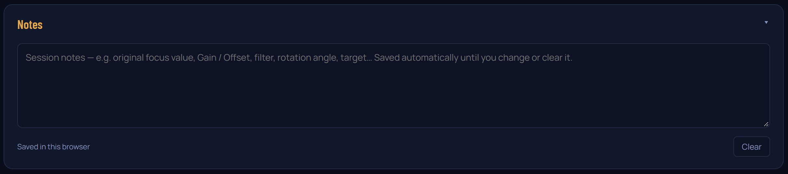
Use it for anything you want to remember for the session — original focus value, Gain / Offset, filter, rotation angle, target. It saves automatically; see "Where your settings live (Chrome / Edge)" under First‑time setup for how long it's kept and what erases it.
Recommendations
- Copy your
.hrzbefore your first edits, so a good file can't be overwritten while you learn. - Write down your night focus position before refocusing for daytime work, so you can return to it.
- Save before you finish — unsaved (red) points are lost otherwise.
Space Hunter — Horizon Editor. Provided “as is”, without warranty
of any kind; use at your own risk (see LICENSE). © 2026 Space Hunter · Georg G Albrecht.